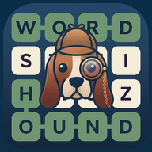

Word Hound
Eliminare l'account e i dati di Word Hound
Questa pagina spiega come chiedere l'eliminazione del tuo account del gioco Word Hound di MetalHound Games e dei dati associati.
Come chiedere l'eliminazione
- Apri Word Hound e annota il tuo nome giocatore (lo trovi nel menu principale o in Impostazioni).
- Scrivi a xenturioevl@gmail.com con oggetto "Word Hound – Eliminazione account", indicando il tuo nome giocatore.
- Elimineremo account e dati entro 30 giorni e ti confermeremo via email.
Dati eliminati
- ID giocatore e collegamento con Google Play Giochi
- Nome giocatore
- Progressi, statistiche e impostazioni salvati nel cloud
- Sfide, punteggi e posizioni nelle classifiche
- Dati di analisi
Dati conservati
Nessun dato personale viene conservato dopo l'eliminazione. L'email della tua richiesta viene conservata solo per il tempo necessario a gestirla, al massimo 30 giorni.
Eliminare solo alcuni dati
- Dati di analisi: disattiva Impostazioni → Analisi nel gioco; chiederemo a Unity di eliminarli.
- Progressi e statistiche: usa Impostazioni → Reset nel gioco.
Delete your Word Hound account and data
This page explains how to request deletion of your account in the game Word Hound by MetalHound Games, and of the data associated with it.
How to request deletion
- Open Word Hound and note your player name (shown in the main menu or in Settings).
- Email xenturioevl@gmail.com with the subject "Word Hound – Account deletion" and include your player name.
- We will delete your account and data within 30 days and confirm by email.
Data deleted
- Player ID and its link to Google Play Games
- Player name
- Cloud-saved progress, stats and settings
- Challenges, scores and leaderboard entries
- Analytics data
Data kept
No personal data is kept after deletion. The email with your request is kept only as long as needed to handle it, at most 30 days.
Deleting only some data
- Analytics data: turn off Settings → Analytics in the game; we will ask Unity to delete it.
- Progress and stats: use Settings → Reset in the game.